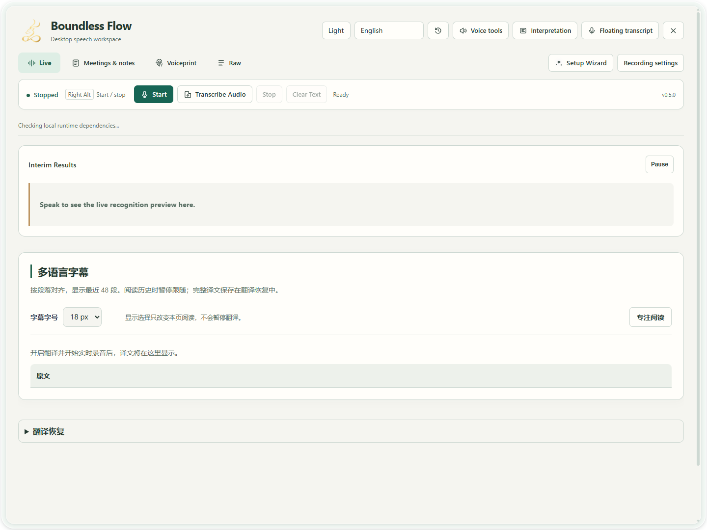

Scenario guide
Record, review and export a meeting
Turn a recording into a reviewable meeting record and deliver minutes.
What you will get
Save a session, review speaker names and text, and export text or subtitles.
Before you start
- Get transcription working, then record and listen to a short test to confirm the selected input includes the participants you need. This workflow does not automatically capture a meeting app's playback; hearing someone through headphones does not prove they are recorded.
- AI minutes require a configured LLM service. Multilingual export needs translations saved beforehand.
Step by step
- 01
Test before the meeting
In the first Setup Wizard step, select an Input device and click Record for 5 seconds. Test the audio sources you need in turn and listen back. For a remote meeting, confirm that the remote participant is in the recording; resolve the input source first if no suitable input is available. Then verify source text and any required translations with a short passage before clicking Start for the meeting. Check recording status during the session. Click Stop at the end and wait for finalization.

Actual app UI · Select to enlarge; example data is not your result - 1Start with the setup guide.
- 2Start recording after setup.
- 3Open saved meeting records here.
- 02
Select this session and review its speakers
Open Meetings & minutes and select the session just finished. Review text and Speaker labels passage by passage. Wait for temporary text to finalize. When adjacent passages repeat the same words, listen to each time range before deleting anything; matching text alone does not prove a duplicate record. Use Single for one passage; use Apply Below only after confirming the later passages belong to the same person. Candidate labels do not establish identity.

Actual app UI · Select to enlarge; example data is not your result - 03
Generate and review minutes
After configuring a usable minutes LLM, generate minutes for this session. Check the summary, decisions, actions, owners and dates against the transcript. Do not retain unsupported details as definite facts.

Actual app UI · Select to enlarge; example data is not your result - 1Check the summary against the transcript.
- 2Check actions, owners and dates.
- 04
Choose language and format, then inspect the export
Choose source text or a saved target translation, select text or subtitle format, then export to a chosen location. Export does not translate missing passages. Complete those through Translation Recovery first.

Actual app UI · Select to enlarge; example data is not your result - 1Choose the original or a saved translation.
- 2Choose a subtitle or text format.
- 3Export and choose a save location.

Import an existing meeting recording
You can import a recording without playing the whole meeting back. Prepare a WAV file of up to 60 minutes and 256 MiB, click Transcribe Audio in the main window and use Browse to select it.
- For local recognition, choose Local model after saving and selecting a recognition model in Setup Wizard. For a service, switch to API service and select a saved OpenAI-compatible or Qwen Audio 3.1 connection. Save addresses and keys in Setup Wizard only.
- Choose Chinese for Chinese audio, or Automatic if the language is uncertain. Check the displayed model, host and upload notice, then click Start transcription. API mode uploads the recording and may incur service charges.
- Wait for transcription and archiving, then open the new session in Meetings & minutes. Continue with this page's review, minutes and export steps. To stop during processing, click Cancel transcription and wait. When Saving appears, let archiving finish.
The app automatically splits Qwen audio into clips of up to 3 minutes and OpenAI-compatible audio into clips of up to 5 minutes. It prepares mono 16 kHz audio and preserves the original recording. API import uses clip boundaries for timing and does not yet use provider word timestamps or speaker labels. Review unidentified speakers manually.

- 1Choose your WAV file with Browse.
- 2Select the saved connection, then check its model and service host.
- 3Choose the recording language; this is not the translation target.
- 4Read the upload notice, then click Start transcription.
Follow the full steps, from saving the workspace address and key to importing audio
Collapse blocks and focus on the live transcript
Click a block title to collapse or expand speakers, context, Live Recording, minutes or session history. Collapsing preserves your edits and does not stop recording. For a long transcript, scroll inside the Live Recording block to review earlier or later speech. Other blocks remain independently accessible.
How to verify success
The selected session matches the meeting time, exported files open, and names, actions and dates have been checked against the transcript.
If something goes wrong
The session is incomplete
Check that recording stopped and finalized, then inspect the selected session and input audio. Changing views does not stop recording.
Minutes generation fails
Check the minutes provider, model and authentication, then retry with a short session. Successful translation does not validate minutes settings.
Translations are missing from the export
Check that the session has that language, recover failed translations and export again.
Imported audio transcription fails
Open the file transcription troubleshooting guide. Check that a saved service was selected, that the WAV is within the limits, and that the workspace and model are available to your account. If the attempt fails or is cancelled before archiving, there is no completed meeting to review.